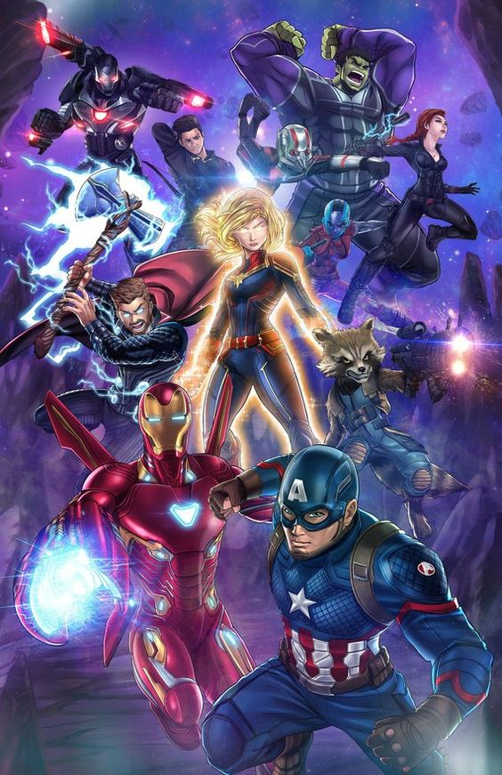

|  | Avengers: Endgame (Vengadores: Endgame en España) es una película de superhéroes estadounidense de 2019 basada en el grupo los Vengadores de Marvel Comics, producida por Marvel Studios y distribuida por Walt Disney Studios Motion Pictures. Es una secuela directa de la película de 2018 Avengers: Infinity War y una continuación de The Avengers (2012) y Avengers: Age of Ultron (2015), siendo la vigesimosegunda película del Universo cinematográfico de Marvel (MCU, por sus siglas en inglés). La cinta está dirigida por Anthony y Joe Russo, con un guion escrito por el equipo conformado por Christopher Markus y Stephen McFeely, y contando con la aparición de múltiples actores de películas anteriores del Universo cinematográfico de Marvel. La película fue anunciada en octubre de 2014 como «Avengers: Infinity War – Part 2». Los Hermanos Russo se unieron para dirigir la película en abril de 2015 y en mayo Markus y McFeely firmaron para escribir el guion. En julio de 2016, Marvel quitó el nombre de la película, refiriéndose a ella simplemente como Película sin título de Avengers. La filmación comenzó en agosto de 2017 en Pinewood Studios en el Condado de Fayette, Georgia, al mismo tiempo de la grabación de Avengers: Infinity War, y concluyó en enero de 2018. La grabación de algunas escenas adicionales tuvieron lugar en el centro y la zona metropolitana de la ciudad de Atlanta. Con el teaser tráiler lanzado el 7 de diciembre de 2018 se reveló que la fecha de estreno se había adelantado para el 26 abril del 2019.47 La cinta fue lanzada en Estados Unidos el 26 de abril de 2019, en formato IMAX y 3D. La película recibió elogios de la crítica por su dirección, actuación, música, entretenimiento visual y peso emocional. Además rompió récords en taquilla y ha recaudado alrededor de más de $2.7 mil millones de dólares mundialmente, convirtiéndose hasta el momento en la película más recaudadora de 2019 y la segunda película más recaudadora de todos los tiempos. También se convirtió en la película más taquillera del Universo Cinematográfico de Marvel (MCU), superando a su antecesora Infinity War. |
| La decimación causada por Thanos ha ocasionado que la mitad de la vida en el universo se desintegre y muera. Clint Barton que se encontraba bajo arresto domiciliario por violar los acuerdos de Sokovia, es testigo de la desaparición de su familia por ese hecho. Tres semanas después, Carol Danvers rescata a Nebula y a Tony Stark, quienes están varados en el espacio exterior en la nave Milano de Quill, después de su batalla contra Thanos en el planeta Títan, y los lleva al complejo de los Vengadores, donde los esperan Natasha Romanoff, Bruce Banner, Steven Rogers, Rocket, Thor, Pepper Potts y James Rhodes. Mientras Tony Stark se recupera, el resto de los Vengadores localizan por medio de Nebula a un Thanos herido en un planeta al que esta llama El Jardín y deciden ir en su búsqueda, cuando estos llegan rapidamente lo enfrentan y dominan con facilidad, luego intentan recuperar las gemas con el objetivo de revertir los efectos del chasquido, cortándole la mano en la que tiene el Guantelete del Infinito... |